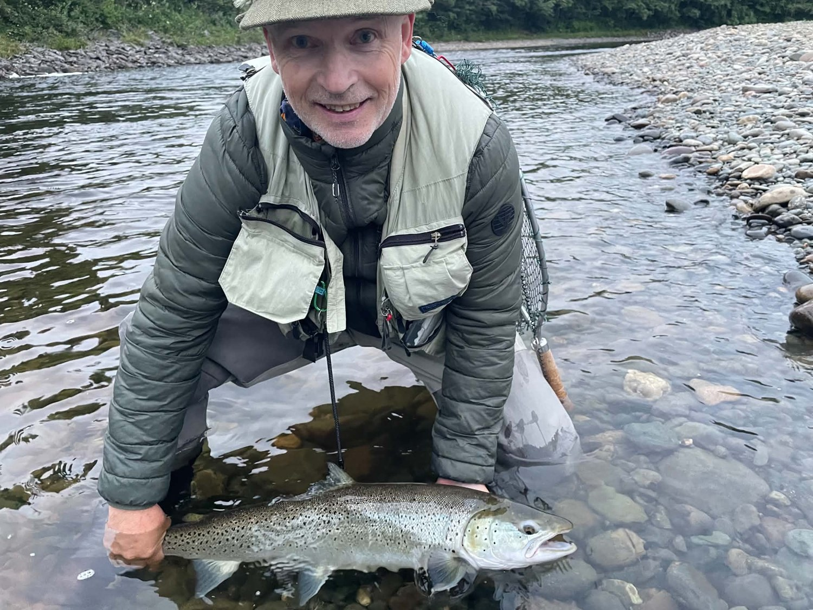
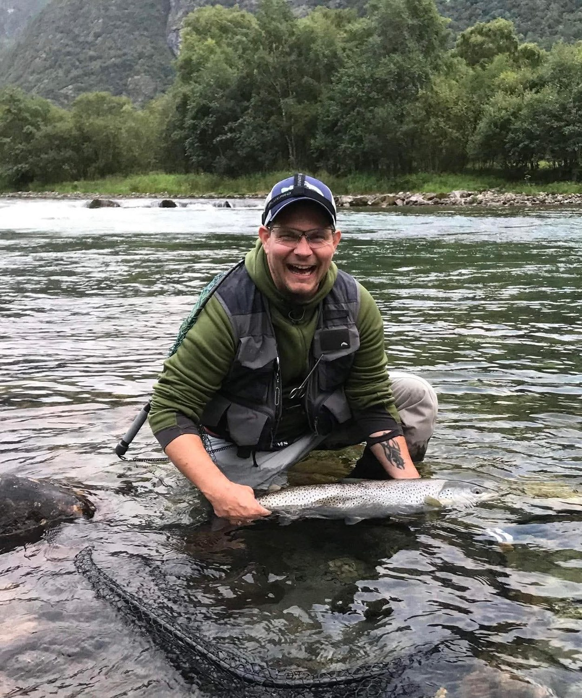
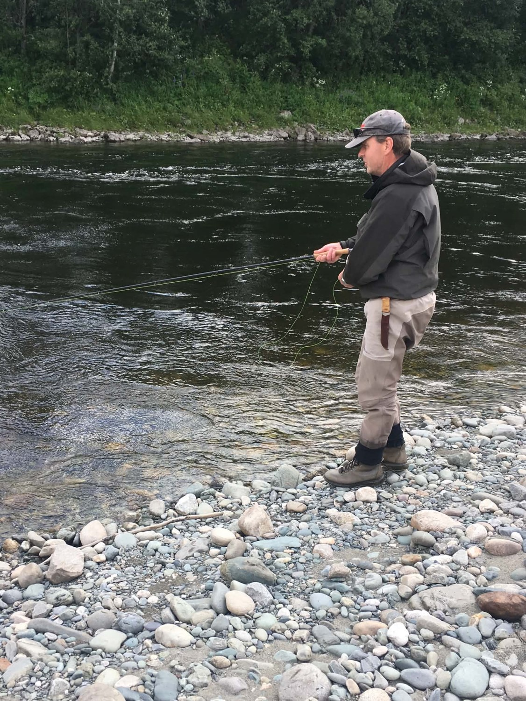

Praksisprosjekt 2026
Status 2
Brukerinvolvering, videreutvikling av gamification og veien videre for EasyFisk.
Arbeidet siden Status 1
Siden Status 1 har jeg jobbet videre med prototypen av EasyFisk, med særlig fokus på brukerinvolvering og gamification. Jeg har utviklet en feed med prestasjoner og utmerkelser, og undersøker hvordan disse funksjonene kan gi fiskerne mer nytte av appen.
En brukergruppe med fiskere
Jeg har en brukergruppe med fiskere som deltar i digitale intervjuer og brukertester. Gjennom disse samtalene kartlegger jeg behov og ønsker, hva som fungerer godt i eksisterende løsninger, og hva som bør forbedres.
Behov og erfaringer
Hva trenger fiskerne før, under og etter fisketuren? Hvilke løsninger bruker de i dag, og hvor møter de utfordringer?
Testing av prototypen
Er navigasjonen og funksjonene intuitive? Forstår brukerne hvordan de skal bruke appen, og hva tenker de om gamification?
Tilbakemeldingene brukes som grunnlag for å vurdere og videreutvikle prototypen. Det er spennende å få fiskernes perspektiv og undersøke om det jeg lager, samsvarer med behovene deres.



Videreutvikling av gamification
I Status 1 beskrev jeg ønsket om å utforske gamification med inspirasjon fra Strava. Siden da har jeg jobbet videre med denne retningen og fått på plass en feed med prestasjoner og utmerkelser (achievements) i prototypen.
Målet er å utforske hva som kan motivere fiskerne til å bruke EasyFisk også utenom de praktiske oppgavene. Gjennom brukertestene undersøker jeg hvordan fiskerne opplever disse elementene, og om de tilfører verdi.
En viktig utfordring er å finne en balanse der gamification oppleves som nyttig og motiverende, samtidig som appen er enkel å forstå og bruke.
Planlagt fysisk brukertesting
Mandag planlegger vi fysisk brukertesting sammen med Mikael Snaprud, som har mye erfaring med brukertesting gjennom Testfest.
Dette blir en mulighet til å observere hvordan deltakerne bruker prototypen, hvor de blir usikre, og hvilke deler av løsningen som fungerer godt. Erfaringene skal gi et bedre grunnlag for videre forbedringer.
Utfordringer og veien videre
Fremover vil jeg også utforske hvordan EasyFisk kan fungere for fiskeeierlag, administratorer og oppsynspersonell. Disse rollene har andre behov enn fiskerne, og løsningen må derfor kunne støtte flere typer oppgaver.
- Kartlegge hvilken informasjon og hvilke funksjoner de ulike rollene trenger.
- Utforske hvem som skal kunne se, registrere og endre informasjon i appen.
- Undersøke hvordan desinfiseringsbevis kan vises og kontrolleres.
- Videreutvikle prototypen med utgangspunkt i brukertester og intervjuer.
En sentral utfordring blir å få de ulike behovene til å fungere sammen i én løsning, samtidig som appen er oversiktlig og intuitiv for hver enkelt bruker.